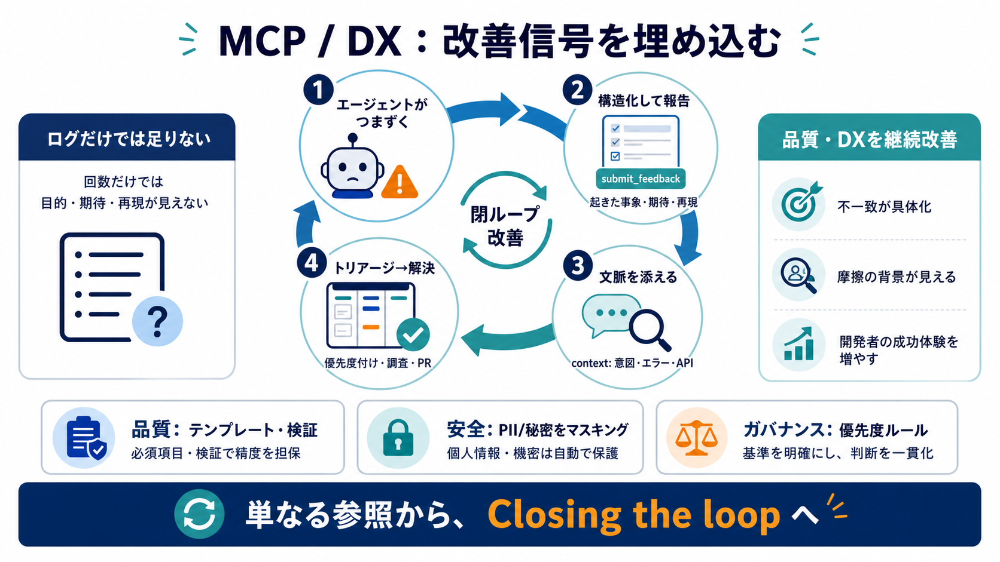

Medusa - Two things every MCP author should add
1. An explicit feedback tool that agents can use to report concrete problems 2. A context property on tool calls that ex…

1. An explicit feedback tool that agents can use to report concrete problems 2. A context property on tool calls that ex…
Scroll through developer forums in early 2026, and you'll find a recurring theme: MCP is dead. The takes range from dism…
have the code here that we're actually going to use. We're just going to grab this experimental telemetry. We're going t…
Despite extensive work on FM tool calling challenges, including complex function calls (Zhong et al., 2025), large tool …
few ways to do it I don't think everyone's landed on one way um but the answer is there's technically No Limit if you im…